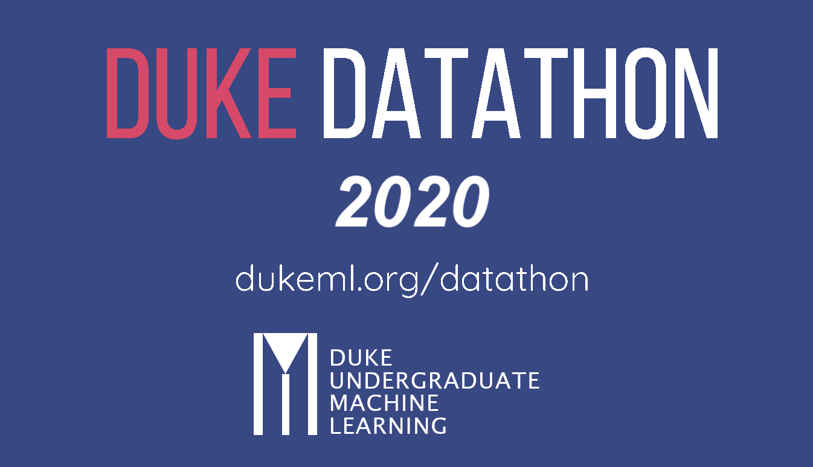
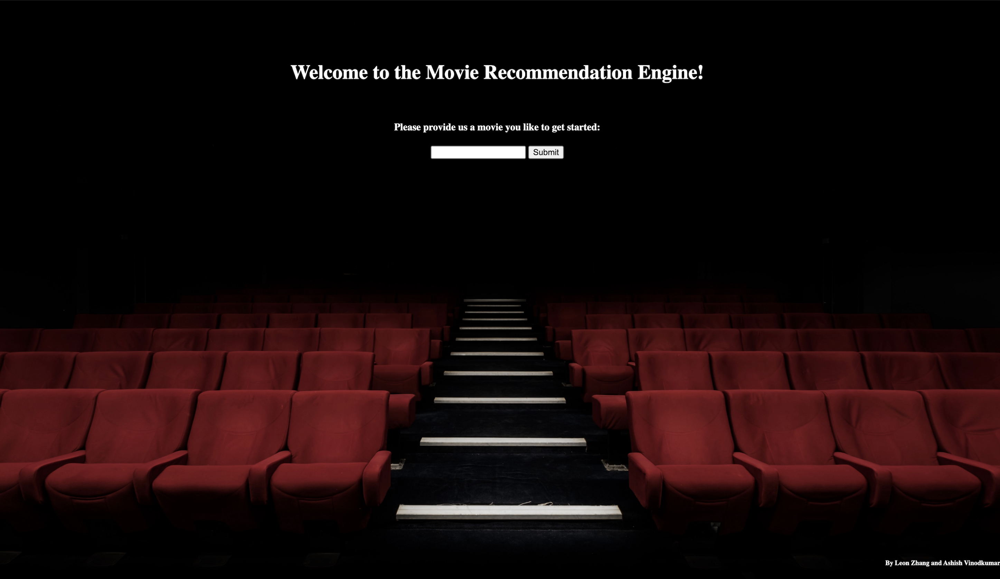

Feb 2021
Algorithmic Stock Trading

Algorithmic trading executes trade orders based on pre-programmed instructions
without human intervention.
We built several stock trading agents utilizing both traditional indicators and
machine learning algorithms. Some of the notable models that we built include
LSTM, ARIMA, Deep Q Learning, and Evolution Strategy. Our machine learning
methods fared better than our technical indicators in most cases.
Oct 2020
Duke 2020 Datathon Winner Submission

What are the long-term, global economic impacts of the Covid-19 pandemic? Our team
recently tackled this pressing question at the 2020 Duke Datathon.
Our team leveraged population, economic and Covid-19 specific data to predict the
impact on key economic indicators. Using a time series model, we predicted how the
countries would perform in the forseeable future.
Aug 2020
Movie Recomendation Web Application

We built a clean and user friendly web interface that provides users with movie
suggestions based on movies that they pick.
The website is built using Flask application with NLP algorithms supporting
the backend computations. It also utilizes cloud services and setup continuous
integration and deployment allowing us to update and make changes effectively.
Apr 2020
Modular Ammonia Synthesis Process Design

We designed a small scale ammonia synthesis process plant for farms. Ammonia
is widely used as fertilizers in farm. However, manufacture of ammonia is an
energy intensive process and is typically produced in large scale plants far
away from farms.
Designing a small-scale ammonia synthesis plant in geographic proximity to the
customers in the Midwest is ideal in reducing transportation costs, providing an
alternate supply chain for these customers, and meeting the large ammonia fertilizer
demand in the locals.
Mar 2020
Pneumonia X-Ray Detection

In this project, I built robust convolutional neural networks to detect patients
with pneumonia disease with over 87% test accuracy from X-ray images using
Tensor-flow.
The significance of this project is to help doctors quickly and accurately
diagnose patients with pneumonia, which is a common symptom of COVID-19.
To make it convenient for more people to use, I built a user-friendly
interface to give more people access to this disease detection tool. With
a simple click of the upload button, one could get the prediction result in
just a few seconds.